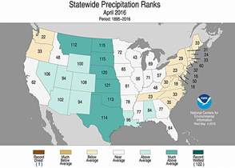
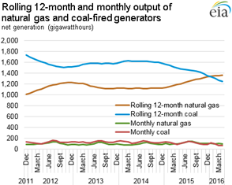

Electricity Monthly Update
With Data for April 2016 | Release Date: June 24, 2016 | Next Release Date: July 25, 2016
Previous Issues
Highlights: April 2016
- Retail electricity prices and volumes were down across all sectors in April compared to last year.
- Electricity system daily peak demand remained near the low end of the 12-month range in April at all locations across the country.
- U.S. coal stockpiles increased 1% from the previous month and are at very high levels due to the warm winter and loss in market share to natural gas.
Key Indicators
| April 2016 | % Change from April 2015 | |
|---|---|---|
| Total Net Generation (Thousand MWh) |
293,317 | -0.3% |
| Residential Retail Price (cents/kWh) |
12.43 | -1.7% |
| Retail Sales (Thousand MWh) |
266,376 | -2.3% |
| Heating Degree-Days | 317 | 5.3% |
| Natural Gas Price, Henry Hub ($/MMBtu) |
1.96 | -26.6% |
| Natural Gas Consumption (Mcf) |
757,330 | 9.1% |
| Coal Consumption (Thousand Tons) |
39,064 | -19.5% |
| Coal Stocks (Thousand Tons) |
196,163 | 17.0% |
| Nuclear Generation (Thousand MWh) |
62,365 | 4.4% |


The total output over a 12-month period of U.S. electric generators fueled by natural gas surpassed those fueled by coal for first time in January 2016
The rolling 12-month total of natural gas-fired generation in the United States ending in January 2016 was higher than the rolling total for coal-fired generation for the first time. Demonstrating that this was not a one-month anomaly, the running 12-month totals for natural gas continued to be higher in February, March, and April 2016.
April 2015 was the first month that electricity generated from natural gas-fired sources was greater than generation from coal-fired sources. Coal-fired generation was greater the next two months, but every month through April 2016 thereafter - with the exception of January 2016 - natural gas-fired generation was greater. A recent EIA Short-Term Energy Outlook forecasts that 2016 will be the first calendar year when natural gas-fired generation will surpass coal-fired generation in the United States.
 Source: U.S. Energy Information Administration, Form EIA-923 Power Plant Operations ReportThe competition between coal and natural gas generators to produce electricity on a day-to-day basis involves careful consideration of delivered fuel prices and emission costs, operations and maintenance (O&M) costs, the terms of fuel supply contracts, and the workings of fuel markets. In the longer term, market participants must evaluate the relative capital cost of new capacity, as well as their expectations regarding fuel, O&M, and emission control costs. Based on all these factors, electricity generators making these complicated decisions have turned more to natural gas recently.
As recently as March 2011, the total electricity output of U.S. coal-fired generators was more than double that of natural gas-fired generators. Over the past five years, the gap has closed. The recent decline in the generation share of coal and the concurrent rise in the share of natural gas appears to have been primarily the result of lower natural gas prices.
Principal Contributor:
Ronald Hankey
(Ronald.Hankey@eia.gov)
End Use: April 2016
Retail rates/prices and consumption
In this section, we look at what electricity costs and how much is purchased. Charges for retail electric service are based primarily on rates approved by state regulators. However, a number of states have allowed retail marketers to compete to serve customers and these competitive retail suppliers offer electricity at a market-based price.
EIA does not directly collect retail electricity rates or prices. However, using data collected on retail sales revenues and volumes, we calculate average retail revenues per kWh as a proxy for retail rates and prices. Retail sales volumes are presented as a proxy for end-use electricity consumption.
Average revenue per kWh by state


Average revenue per kilowatthour figures decreased in 29 states and the District of Columbia in April compared to last year. The largest declines were found in Nevada (down 15%), Hawaii (down 14%), and Mississippi (down 13%). Hawaii's electricity sector is largely fueled by petroleum products shipped from the U.S. mainland and imported sources, and has benefitted greatly from the drop in world oil prices over the last several years. Its 22.68 cents per kilowatthour average in April was the lowest average since September 2009 and down nearly 40% from a high of 34.61 cents in July 2012. Twenty-two states increased compared to last year, led by West Virginia (up 9%), Delaware (up 8%), Alaska (up 6%), and South Dakota (up 5%).
Total average revenues per kilowatthour were down 2.1% to 9.81 cents in April compared to last year. All sectors were down on the month, from a 4.3% drop in the Transportation sector to a 1.7% drop in the Residential sector. Retail sales were down 2.3% to 266,376 gigawatthours (GWh), with declines also across all sectors.
Retail sales


State retail sales volumes were down in 39 states and the District of Columbia in April compared to last year. Idaho recorded the largest year-over-year decline, down just over 10%. The District of Columbia, Delaware, and Washington had the next largest declines, all down 8-9%. Twelve states had retail sales volume increases in April, led by West Virginia (up over 3%), Louisiana (up nearly 3%), and Rhode Island (up nearly 2%).


Heating Degree Days (HDD) measure the daily variation in average temperature from a 65 degree Fahrenheit baseline, chosen as a proxy for minimum heating or cooling energy demand. HDDs rose in 32 states and the District of Columbia in April, largely across the South and eastern half of the country. Fourteen states had HDD declines from last year, mostly in the western US. The largest declines were found in the Pacific Northwest, where Washington, Oregon, and Idaho had their second-warmest April on record. This warm weather had a large impact on hydrological conditions across the West. Snowpack levels diminished considerably, sharply increasing water flows. Though positive for hydro generation during the month (total hydro generation increased from 12.94 terawatthours in April 2015 to 17.91 terawatthours in April 2016 across the West), it will also have the effect of decreasing hydro generation potential in the coming months as snowpack levels are lower to nonexistent.
Resource Use: April 2016
Supply and fuel consumption
In this section, we look at the resources used to produce electricity. Generating units are chosen to run primarily on their operating costs, of which fuel costs account for the lion's share. Therefore, we present below, electricity generation output by fuel type and generator type. Since the generator/fuel mix of utilities varies significantly by region, we also present generation output by region.
Generation output by region

Net generation in the United States decreased by only 0.3% from the previous April. This occurred because the country, as a whole, experienced very similar temperatures in both April 2015 and April 2016. At the regional-level, the largest percent change in generation compared to the previous April occurred in Florida. In April 2015, Florida experienced record warm temperatures, whereas in April 2016, the state only experienced above average temperatures. This led to a year-over-year decrease of 3.6% in electricity generation for Florida.
Electricity generation from coal decreased in all regions of the country except for the Northeast and MidAtlantic. However, like last month, the change in natural gas generation from the previous year was more mixed. Florida, Texas, and the West all saw year-over-year decreases in natural gas generation, whereas the Northeast, MidAtlantic, Southeast, and Central regions all observed increases in natural gas generation compared to the previous April. All regions of the country, except for the Northeast, saw an increase in nuclear generation. The Northeast saw a 24.4% drop in nuclear generation compared to April 2015 because the Indian Point 2 nuclear plant in New York was offline for refueling and maintenance.
Fossil fuel consumption by region
The chart above compares coal consumption in April 2015 and April 2016 by region and shows that the change in coal consumption mirrored the change in electricity generation from coal.
The second tab compares natural gas consumption by region and shows that changes in natural gas consumption from the previous April were similar to the changes in electricity generation from natural gas over the same period.
The third tab presents the change in the relative share of fossil fuel consumption by fuel type on a percentage basis, calculated using equivalent energy content (Btu). This highlights changes in the relative market shares of coal, natural gas, and petroleum. In April 2016, the share of natural gas consumption increased in almost all regions of the country at the expense of coal consumption compared to the previous year. The only outlier was in the Northeast, where the very small share of coal consumption increased slightly at the expense of natural gas compared to the previous April.
The fourth tab presents the change in coal and natural gas consumption on an energy content basis by region. The changes in total coal and natural gas consumption were similar to the changes seen in total coal and natural gas net generation in each region.
Fossil fuel prices
To gain some insight into the changing pattern of consumption of fossil fuels over the past year, we look at relative monthly average fuel prices. A common way to compare fuel prices is on an equivalent $/MMBtu basis as shown in the chart above. The average price of natural gas at Henry Hub increased from the previous month, going from $1.76/MMBtu in March 2016 to $1.96/MMBtu in April 2016. The natural gas price for New York City (Transco Zone 6 NY) also increased from the previous month, going from $1.36/MMBtu in March 2016 to $1.61/MMBtu in April 2016.
The New York Harbor residual oil price increased from the previous month, going from $5.35/MMBtu in March 2016 to $5.69/MMBtu in April 2016. Regardless, oil used as a fuel for electricity generation is almost always priced out of the market.
A fuel price comparison based on equivalent energy content ($/MMBtu) does not reflect differences in energy conversion efficiency (heat rate) among different types of generators. Gas-fired combined-cycle units tend to be more efficient than coal-fired steam units. The second tab shows coal and natural gas prices on an equivalent energy content and efficiency basis. For the sixteenth consecutive month, the price of natural gas at Henry Hub was below the price of Central Appalachian coal on a $/MWh basis. The spread between the two prices decreased significantly in April 2016, mainly due to the increase in the price of natural gas at Henry Hub. The price of natural gas at New York City on a $/MWh basis was below the price of Central Appalachian coal for a second consecutive month, albeit the spread between the two prices decreased due to the increase in the price of natural gas at New York City.
The conversion shown in this chart is done for illustrative purposes only. The competition between coal and natural gas to produce electricity is more complex. It involves delivered prices and emission costs, the terms of fuel supply contracts, and the workings of fuel markets.
Regional Wholesale Markets: April 2016
The United States has many regional wholesale electricity markets. Below we look at monthly and annual ranges of on-peak, daily wholesale prices at selected pricing locations and daily peak demand for selected electricity systems in the Nation. The range of daily prices and demand data is shown for the report month and for the year ending with the report month.
Prices and demand are shown for six Regional Transmission Operator (RTO) markets: ISO New England (ISO-NE), New York ISO (NYISO), PJM Interconnection (PJM), Midwest ISO (MISO), Electric Reliability Council of Texas (ERCOT), and two locations in the California ISO (CAISO). Also shown are wholesale prices at trading hubs in Louisiana (into Entergy), Southwest (Palo Verde) and Northwest (Mid-Columbia). In addition to the RTO systems, peak demand is also shown for the Southern Company, Progress Florida, Tucson Electric, and the Bonneville Power Authority (BPA). Refer to the map tabs for the locations of the electricity and natural gas pricing hubs and the electric systems for which peak demand ranges are shown.
In the second tab immediately below, we show monthly and annual ranges of on-peak, daily wholesale natural gas prices at selected pricing locations in the United States. The range of daily natural gas prices is shown for the same month and year as the electricity price range chart. Wholesale electricity prices are closely tied to wholesale natural gas prices in all but the center of the country. Therefore, one can often explain current wholesale electricity prices by looking at what is happening with natural gas prices.
Wholesale prices

Wholesale electricity and natural gas prices varied widely across the country in April. Prices peaked at much higher levels in New England than at any other location, as natural gas prices of $5.75/MMBtu led to electricity prices just over $50/MWh. By comparison, the highest daily natural gas price anywhere else in the country was only $2.13/MMBtu and the highest electricity price anywhere else was $43/MWh. The lowest wholesale electricity and natural gas prices in the country were both found in the Northwest. Natural gas prices bottomed out at $1.06/MMBtu at Sumas and electricity prices ranged from only $4-$16/MWh at Mid-C, influenced by both the low natural gas prices and robust hydro generation during the month.
Electricity system daily peak demand

{kind=link}
{kind=link}
{kind=link}
Electricity system daily peak demand in April remained near the low end of the 12-month range at all locations across the country. Annual lows were set in New England (ISONE), New York State (NYISO), Southern Company, and Texas (ERCOT) and nearly set in the Mid-Atlantic (PJM), the Midwest (MISO), and Progress Florida. Daily peak maximums remained largely between 60-70% of all-time peak levels, with Progress Florida and Texas (ERCOT) the only regions exceeding 70% of all-time peaks, though both regions were far short of 12-month peak levels.